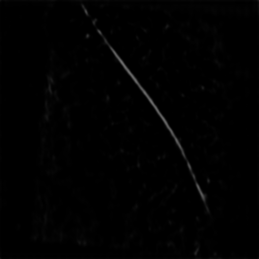

Particle Refined Localization
Particle refined localization module¶
For the refinement step, MiLoPYP learns to localize proteins of interests with high accuracy, when trained using sparsely annotated data. This step can be used without the previous exploration step.
Input preparation¶
Training set should include two files: 1. a .txt file with tomogram name and path to tomogram; 2. a .txt file with image name and its corresponding x,y,z coordinates.
-
If use refinement module after exploration module, we can use the same train image file and the generated train coordinates file from the exploration module.
-
If use refinement module alone, some manual labeling is needed to generate training coordinates. A corresponding train image file is needed as well.
For 1, the text file should have the following format:
For 2, the text file should have the following format:
Generate training set from manual label¶
We provide a simple code to generate the described training set from a selected folder.
First, make a train directory for all training 3d tomograms and its corresponding coordinates files. Each micrograph should have its own coordinate file: e.g. train_1_img.rec and train_1_img_coord.txt
For training coordinates, manually picking is performed on selected micrographs using imod. For a single tomogram, a full annotation is not required. Simply find some subregions and pick around 10\% to 70\% of the particles in that subregion. The subregion does not need to be big. After manual annotation, imod will generate .mod files for annotated coordinates. Converting .mod files to .txt files can be done through model2point command from imod. A sample command is:
.mod files are converted to text files, move all coordinate.txt files to the train directory.
Warning
Depends on the x-y-z order of your input tomogram, the output coodinates generated using imod will be in different order. Two most common orders are x-y-z and x-z-y. Make sure you get the orders correct.
Once all the .mod files are converted to text files, move all coordinate.txt files to the train directory.
To generate train image and coordinate files, run generate_train_files.py file under utils/ folder. Two input arguments are required: -d/--dir for path to train directory, and -o/--out for output training file name. The default order for input coordinates is x-z-y, if you want to specify a different order, add -r/--ord. Accepted orders are: xyz, xzy, zxy. An example command:
| Arguments | Purpose |
|---|---|
ext |
extension for tomogram files |
dir |
path that contains all training tomograms and labels |
out |
training file output name |
ord |
order of the tomogram |
inference |
if set to true, generating input for evaluation stage |
Once files are generated, move all training files to data/ directory (create data/ directory if it doesn't exist)
Training¶
Globular shaped proteins¶
A sample training command to train sample EMPIAR-10304 dataset (suppose train image txt is called sample_train_explore_img.txt and train coordinates txt is called training_coordinates.txt and validation image txt is called sample_val_img.txt and validation coordinates txt is called val_coordinates.txt (Validation files are optional):
python main.py semi --down_ratio 2 --num_epochs 10 --bbox 16 --exp_id sample_refinement --dataset semi --arch unet_5 --save_all --debug 4 --val_interval 1 --thresh 0.85 --cr_weight 0.1 --temp 0.07 --tau 0.01 --lr 5e-4 --train_img_txt sample_train_explore_img.txt --train_coord_txt training_coordinates.txt --val_img_txt sample_val_img.txt --val_coord_txt val_coordinates.txt --K 900 --compress --order xzy --gauss 0.8 --contrastive --last_k 3
| Arguments | Purpose |
|---|---|
num_epochs |
number of training epochs, recommend 5 to 10 |
exp_id |
experiment id you want to save it as. |
bbox |
bounding box size for particle, used to generate Guassian kernel during training. |
dataset |
sampling and dataloader mode, use semi for default |
arch |
model backbone architecture, Format is name"_"numOfLayers - recommend unet_4 and unet_5 |
lr |
learning rate, recommend 1e-3 to 5e-4, less training examples, lower learning rate |
debug |
debug mode for visualization, currently only support mode 4 for easier visualization - output will be saved to 'debug folder' including view of each slice, ground truth heatmap, predicted heatmap, and detection prediction based on heatmap |
val_interval |
interval to perform validation and save model every val intervals |
cr_weight |
weight for contrastive regularization, recommend smaller number for more samples, larger number for less samples |
save_all |
whether to save all models for each val_interval |
gauss |
preprocessing gaussian filter to denoise tilt series and tomogram |
temp |
infoNCE temperature |
down_ratio |
downsampling in x-y direction, default is 2. Recommend 2 |
tau |
class prior probability |
thresh |
threshold for soft/hard positives |
last_k |
size of convolution filter for last layer |
compress |
whether to combine 2 z-slices into 1, recommend on |
K |
maximum number of particles |
fiber |
if the protein-of-interest is fiber/tubular shaped, turn this on |
More description of arguments are in opt.py file. Please refer to the paper for detailed parameter selection.
All outputs will be saved to exp/semi/exp_id folder. For this command, outputs will be saved to exp/semi/sample_refinement. Within folder, there will be:
opt.txtwhich saves all the option you used.debugfolder, which saves all validation output.model_xxx.pthmodel checkpoint, the final model weights will bemodelxxx_last_contrastive.pth.- A directory with specific training/validation loss info for each run
Sample outputs in debug folder
{kind=link}
{kind=link}
How to select which model to use and cutoff threshold score for output?
Model and cutoff threshold score can be selected based on validation loss and outputs in debug folder.
When there is fully labeled tomogram for validation, typically select the model with the lowest validation loss. When there is no fully labeled tomogram, select the model that generates best heatmaps. Typically, unless there's severe overfitting, model from the last epoch generates good results.
Cutoff threshold selection can be estimated based on detection output (a .txt file that contains x,y,z coordinates and corresponding detection score). It can also be estimated from *_pred_out.png images within debug fodler that circles out identified particles above a certain cutoff threshold. If there are many false positives, consider using a higher cutoff score.
Training on tubular shaped proteins¶
A sample training command to train sample EMPIAR-10987 dataset (suppose train image txt is called sample_train_microtubule_img.txt and train coordinates txt is called training_coordinates_microtubule.txt and validation image txt is called sample_val_microtubule.txt and validation coordinates txt is called val_coordinates_microtubule.txt (Validation files are optional):
python main.py semi --down_ratio 2 --num_epochs 10 --bbox 12 --contrastive --exp_id fib_test --dataset semi --arch unet_5 --save_all --debug 4 --val_interval 1 --thresh 0.3 --cr_weight 1.0 --temp 0.07 --tau 0.01 --lr 1e-4 --train_img_txt sample_train_microtubule_img.txt --train_coord_txt training_coordinates_microtubule.txt --val_img_txt sample_val_microtubule.txt --val_coord_txt val_coordinates_microtubule.txt --K 550 --compress --gauss 1 --order xzy --last_k 5 --fiber
Note here the main different is the --fiber command. Since the protein-of-interest is of tubular shape, make sure to have --fiber turned on.
Outputs will be the same as training for globular shaped proteins.
Sample outputs in debug folder.
[
{kind=link}
Training on GPUs with less memory using lightweight model¶
For GPUs with less than 32GB RAM (e.g., 16GB), we provide a lightweight model that employs a modified contrastive learning approach. This model achieves comparable particle picking results while using less memory and offering improved time efficiency. Additionally, it demonstrates enhanced performance in spike detection. The lightweight model uses the same input training files but requires different command-line arguments. Below is a sample command for training the lightweight model:
python main_class.py semiclass --num_epochs 20 --bbox 16 --contrastive --exp_id sample_lightweight --arch small_5 --debug 4 --val_interval 2 --thresh 0.5 --cr_weight 0.1 --temp 0.07 --tau 0.01 --lr 1e-3 --train_img_txt sample_train_explore_img.txt --train_coord_txt training_coordinates.txt --val_img_txt sample_val_img.txt --val_coord_txt val_coordinates.txt --K 900 --compress --order xzy --gauss 0.8 --contrastive --dataset semiclass --down_ratio 1 --ge
main_class.pythis is the main file to train the model for lightweightsemiclassthis is the task name for using lightweight model (required input aftermain_class.py)--archfor lightweight model the architecture name is small_5--datasetfor lightweight model the dataset mode is semiclass--down_ratiofor lightweight model the down_ratio is 1--gefor lightweight model we use a slightly modified loss function therefore please make sure this argument is on
Other arguments are similar to the regular model.
Inference¶
Inference on globular shaped proteins¶
Once training is finished, we can use the trained model for testing. test_img.txt that contains all tomograms can be generated using generate_train_files.py following similar process. To run inference on all tomograms, run:
python test.py semi --arch unet_5 --dataset semi --exp_id sample_refinement --load_model exp/semi/sample_refinement/model_4.pth --down_ratio 2 --K 900 --ord xzy --out_thresh 0.2 --test_img_txt test_img.txt --compress --gauss 0.8 --out_id all_out
exp/semi/sample_refinement/all_out/ folder. For each tomogram, 2 outputs are generated:
.txtfile with coordinates in x,z,y order, if--with_scorein command, a score column will be added to the output*hm.mrca 3D detection heatmap for each tomogram.
| Arguments | Purpose |
|---|---|
load_model |
path to trained model, the command here is using model from 4th epoch |
out_thresh |
cutoff score for detection |
out_id |
folder to save all outputs |
ord |
order of the tomogram |
with_score |
whether generated output will include score in addition to x,y,z coordinates |
Warning
Make sure to use same --last_k, --gauss, --arch to make sure correct loading of models.
Inference on tubular shaped proteins¶
For tubular shaped proteins, similarly, we add --fiber to the command. In addition, we specify cutoff threshold for curve fitting to the infenrece command. To run inference on tomograms with fiber-specific post-processing, run:
python test.py semi --arch unet_5 --dataset semi --exp_id fib_test --load_model exp/semi/fib_test/model_10.pth --down_ratio 2 --K 550 --order xzy --out_thresh 0.205 --test_img_txt sample_train_microtubule_img.txt --compress --gauss 1 --cutoff_z 10 --out_id new_out --last_k 5 --fiber --curvature_cutoff 0.03 --nms 3
curvature_cutoff | max curvature for fitted curve, for microtubules the curvature should be small. Curves above the threshold will be discarded.|
| r2_cutoff | max residual for fitted curve, discard if above the residual/bad fitting|
| distance_cutoff | distance cutoff for whether two points are connected in graph|
{kind=link}
Inference with lightweight model¶
For the lightweight model, the inference command is similar to the standard model. The main differences in arguments correspond to those used in the training command. Below is a sample command for training the lightweight model:
python test_class.py semiclass --exp_id sample_lightweight --arch small_5 --dataset semiclass --K 900 --compress --order xzy --gauss 0.8 --load_model exp/semiclass/sample_lightweight/model_4.pth --out_thresh 0.5 --test_img_txt test_img.txt --out_id all_out --down_ratio 1 --nms 15
test_class.py. Output format is the same as the standard model.
Convert output txt to .mod for imod¶
Make usre output txt files do not include score. Then, run:
More details on imod command.Output coordinates from trained model can then by used for subtomogram extraction and averaging and subsequent 3D reconstruction.